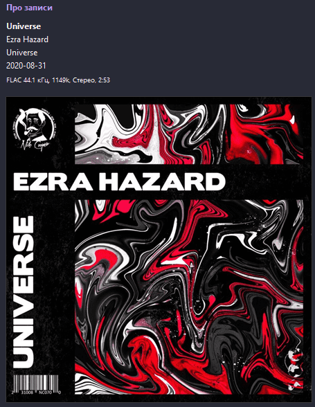

Майже всі люди знають, що MP3 - це найвідоміший і найпоширеніший музичний формат у цілому світі, проте час від часу їм потряпляє на очі слово "FLAC". Що ж давайте з вами розберемося, що таке цей "FLAC" та з чим його їдять.
FLAC (Free Lossless Audio Codec) - це кодек, який використовується для стиснення аудіо при цьому не погіршуючи його якість. На відміну від знайомого нам формату MP3, який стискає аудіо і при цьому видаляє певну кількість інфрмації з аудіопотоку для зменшення розміру файлу, FLAC в свою чергу цього не робить і тому якість звучання музики в цьому форматі майже така як і при її записі. Бітрейт такого формату складає ~1441Kbps.
FLAC побачив світ 20 липня 2001 р. Його творцем вважається Джош Коалсон з організації Xiph.Org Foundation, мета якої - розробка вільного мультимедійного ПЗ. Аудіо з таким форматом легко впізнати по характерному закінченню (.flac). Для детальнішої інформації звертайтеся до Вікіпедії.
На жаль В Інтернеті дуже багато сайтів-обманок, які "начебто містять" на своїх серверах треки з FLAC форматом. "Народні умільці" з допомогою прямих рук, танців з бубнами та мольфарських заклинань можуть "покращити" аудіо у форматі MP3 з бітрейтом 320, 256 та навіть 128Kbps в начебто FLAC. Звучить смішно, правда ж ))). Такі аудіо-файли за розмірами не поступаються оригінальному FLAC, оскільки в аудіопотік додають зайву інформацію. Та на щастя такі "чудо-файли" зразу можна визначити на слух, якщо порівняти з оригінальним FLAC.
Все в цьому світіт має свою ціну, от і FLAC не вийняток, далі я опишу про переваги та недоліки цього формату. Що ж поїхали:
Переваги
- Висока якість звучання
- Кодек має відкритий вихідний код
- Велика кількість додаткових можливостей
- Програється майже на всіх плеєрах
- Кросплатформовий (підходить для всіх ОС)
Недоліки
- Великий розмір файлу
- Потрібно доволі якісне обладнання, щоб розкрити повний потенціал звучання (навушники особливо)
- На старих версія ОС, можуть виникнути проблеми зі звучанням
Ось і все, ми поверхово (а може й ні) розглянули що таке FLAC та з чим його їдять. Для більшого інтересу Ви можете зайти на Вікіпедію щоб більше дізнатися про програмну частину цього формату.
Freezer
Якщо у вас є якісні навушники, аудіосистема і тд, то постає питання - звідки завантажувати пісні у форматі FLAC? Приблизно 70% сайтів з начебто "оригінальним FLAC" - обманки і слугують для приваблення аудиторії задля заробітку на відвідуваності + вам пропонують завантажувати зразу цілі альбоми, а не окремі треки і забути про свій лімітний трафік (залежить від вашого тарифного плану!)
З часом бороздячи в безкрайніх просторах Інтернету я натикнувся на програмку Freezer (іконку програми Ви бачите вище). Ця програма є безкоштовним клоном музичного сервісу Deezer, але її особливість в тому, що вона є абсолютно безкогтовною, без реклами та з можливістю завантажувати треку у форматі FLAC абсолютно на халяву. Всі ми любимо халяву, правда ж ))). Посилання на офіційний сайт програми я залишу нижче.
Отже головними перевагами програми є її безкоштовність та можливітсь завантажувати треки у високій якості + присутня укр. мова та українські виконавці. Freezer підходить для використання на Windows, Android та Linux (з останнім є певні труднощі з установкою). Мій вибір впав на цю програму через те, що всі треки електро музики я знаходжу саме в ній, якщо ж треку немає то просто завантажую у форматі 320Kbps з іношого ресурсу (з цим нічого не поробиш).
Отже розглянемо головне вікно програми та впевнимося, що вона дійсно завантажує треки у форматі FLAC.
УВАГА!!! ДЛЯ КОРИСТУВАННЯ ЦІЄЮ ПРОГРАМОЮ ПОТРІБЕН АККАУНТ DEEZER!!!
Щойно завантажена програма буде на анг. мові, щоб увімкнути українську потрібно зайти в Налаштування. Крім мови за замовчуванням треку будуть завантажуватися у форматі MP3 320Kbps - це легко виправити, просто потрібно вибрати потрібну опцію з випадаючого меню. Так само потрбіно налаштувати з папкою та назвами пісень (до назв додаєьбся порядковий номер та для кожного треку створюється папка виконавця). Отже після налаштувань наше вікно матиме такий вигляд:
Тепер знайдемо будь-який трек в стилі електро. Не довго думаючи взяв трек з телефону, першим ліпшим став трек Ezra Hazard - Universe, от його і завантажимо вибравши потрібний формат за бітрейтом:
І тепер перевіримо в музичному плеєрі характеристики цього треку:
І як можемо бачити зі скріншота бітрейт даного треку становить 1149Kbps - отже це безсумнівно формат FLAC. Для перевірки я використовував музичний плеєр MusicBee (на нього посилання теж залишу), але ви можете використовувати будь-який плеєр. Отже тепер ви знаєте як швидко завантажити улюблений трек у високій якості. Нижче ви бачите посилання на Freezer та MusicBee: